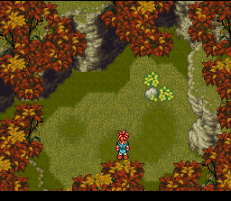

| The Queen Returns |

| Enemigos | Items | Grupo | Nivel recomendado |
| + Blue Imp + Green Imp + Roly + Roly Rider + Imp Ace + Blue Eaglet |
+ Tonic + Power Glove |
+ Crono | El que sea. |
Una vez que hallas cruzado el portal del tiempo, apareceras en Truce Canyon, ahi solamente elimina a los enemigos que te encuentres, son los mas debiles del juego. Ademas toma los cofres que te encuentres ahi. Cuando salgas de ahi, visita alguna de las casas de ese lugar para obtener informacion sobre donde te encuentras y de lo que esta pasando. |
 |
| Enemigos | Items | Grupo | Nivel recomendado |
| + Blue Eaglet + Green Imp + Roly + Roly Rider |
+ Power Tab + Shelter |
+ Crono | 5 |
Aqui al igual que en Truce Canyon, los enemigos son muy debiles. Trata de eliminar a todos los que te puedas encontrar para que subas rapido de nivel. Encontraras algunos arbustos que se mueven, ve hacia ellos y tocalos, algunos son enemigos, y otro es un mounstruo que te dara un Shelter. Si en tu camino te topas con un puntito brillante, tocalo que es un Power Tab. Despues de haber vencido a los enemigos y haber tomado todos los items, sal de ahi por arriba para que llegues a Guardia Castle. |